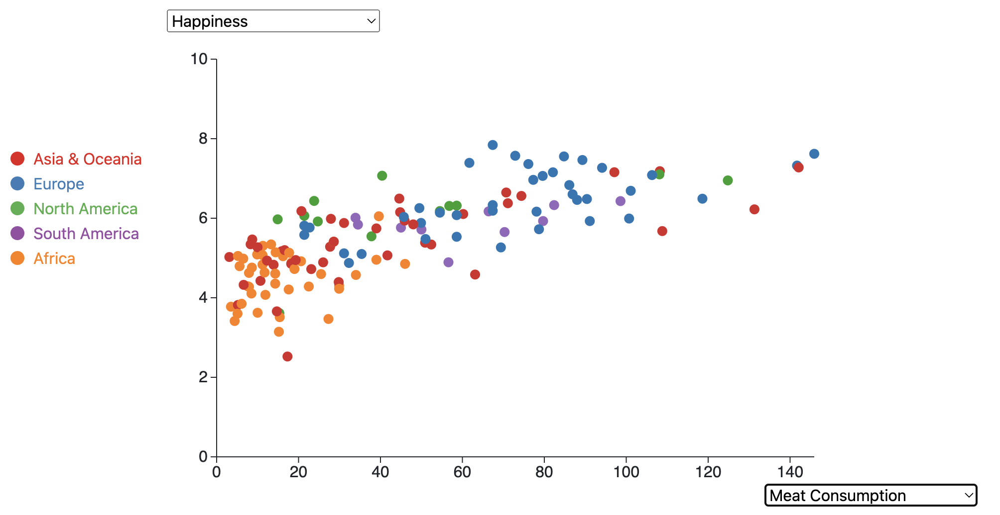
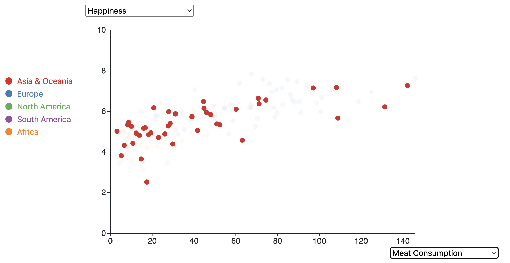
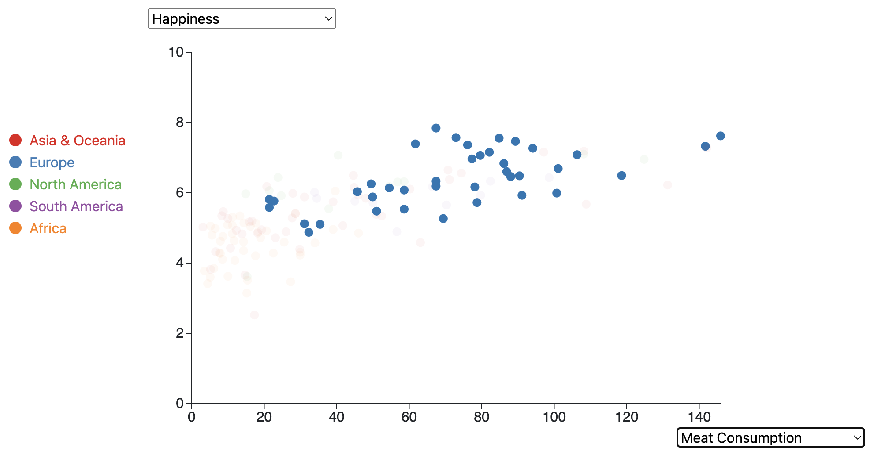
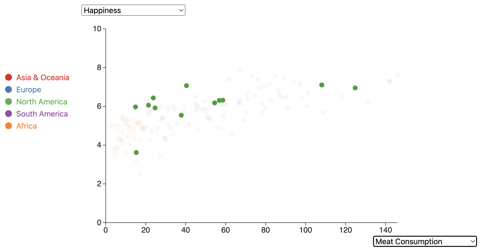
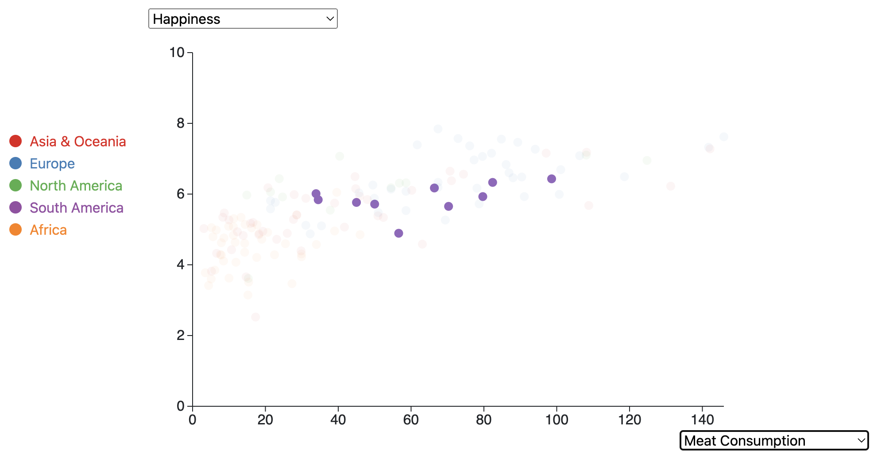
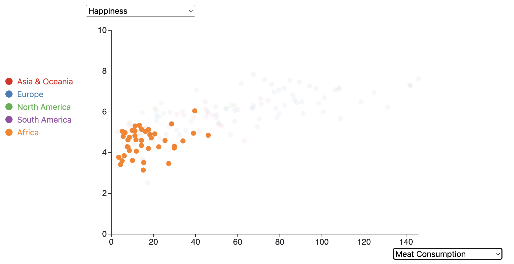

Before diving into visualization design, I thoroughly analyzed the dataset to understand its structure, variables, and relationships. This involved examining variables such as Happiness, Fertility, GDP per Capita, Life Expectancy, and others to identify potential patterns and correlations. I have done other school projects using this dataset that have analyzed the effect of different variables on happiness. Therefore, I knew this data would be suited for that sort of question.
The primary goal of this visualiztion will be to explore the trends among different countries based on various variables, their relationships with eachother, and their relationship to happiness. Additionally, each country's continent is marked so the trends within continents can be analyzed. Considering this sort of world data could be applicable to many different audiences. Those interested in global development, policy making, and researchers could be interested in the relationships between different variables.
I selected appropriate visual encodings for the variables based on their nature and the insights I aimed to convey. For example, I used scatter plots to visualize the relationship between Happiness and other factors like Fertility or GDP per Capita. A scatter plot is the best plot to use as it can clearly show the relationship between different variables. Color was employed to encode the continent variable, making it easier to distinguish data points from different regions. A standard color theme was used from the javascript library so the dots can be clearly distinguished from one another. Each country is representted by a circle as a simple shape will make interpreting the trends the easiest as there will be no extraneous design elements to distract the viewer.
I designed the layout to facilitate comparison and exploration. Placing the axes and dropdown menus prominently ensured ease of use and allowed users to interactively select variables of interest. These dropdown menus are located next to their respective axes so the user knows what they are changing. Additionally, tooltips were incorporated to provide additional information on data points, enhancing interactivity and comprehension. Because there are so many data points, being able to hover over each point and observe which country will allow users to see where a certian country fits into the trend. Additionally, clicking the dot will keep the country name visible until clicked again. A legend was included on the side of the graph that corresponds to the color of each continent. The last form of interactivity, is being able to hover over the continents on the legend which highlights the countries of those continents on the graph. This allows a user to clearly see the trend of the certain continents.
Throughout the design process, I iterated on different layouts, color schemes, and interaction mechanisms to optimize clarity and effectiveness. I frequently analyzed the layout of the site to see how the visualization worked and made improvements based on what I thought about it.
Each design choice was made deliberately to enhance the understanding and exploration of the data. For example, using color to encode continents enabled users to quickly identify geographic patterns, while interactive features like dropdown menus empowered users to customize their exploration based on their interests.
I used the visualization to explore trends and relationships among variables. Because there are so many variables, there are many different analyses and comparisons that coul dbe done. For this documentation page, I will focus on the relationship between happiness and meat consumption. I am focusing on this as meat consumption seems to have the tightest correlation with happiness.
Here, we can see that as meat consumption increases, happiness score increases as well. Does this mean eating more meat makes a country happier? That seems a little weird. Lets investigate within continents to see if we can discover more.
Within Asia and Oceania we can see a similar trend as the trend worldwide. There seems to be a larger number of countries on the lower side of the meat consumption range.
There is a similar trend in Europe but the spread in meat consumption is a little higher when compared to Asia and Oceania.
Within North America, there seems to be a fairly positive spread in the first half of the data with only a couple higher points in the meat consumption category.
South America has an interesting trend in that the happiness scores dont seem to vary much depending on meat consumption.
The trend within Africa is also pretty unique in that most countries as in the lower left corner of the graph being low in happiness and meat consumption. There does seem to be some sort of linear trend with increasing happiness as happiness increases.
Overall, these trends show that as meat consumption increases, so does happiness. Rather than this being a causal relationship, it is more likely just a correlation. Meat consumption may be a proxy for country wealth. This is supported by the fact that countries in continents such as europe and north america are much higher in meat consumptiont than countries in Asia and Africa which have (in some cases) much poorer countries. However, within continent, there is still some variability in both meat consumption (presumambly caused by variability in wealth) and happiness.